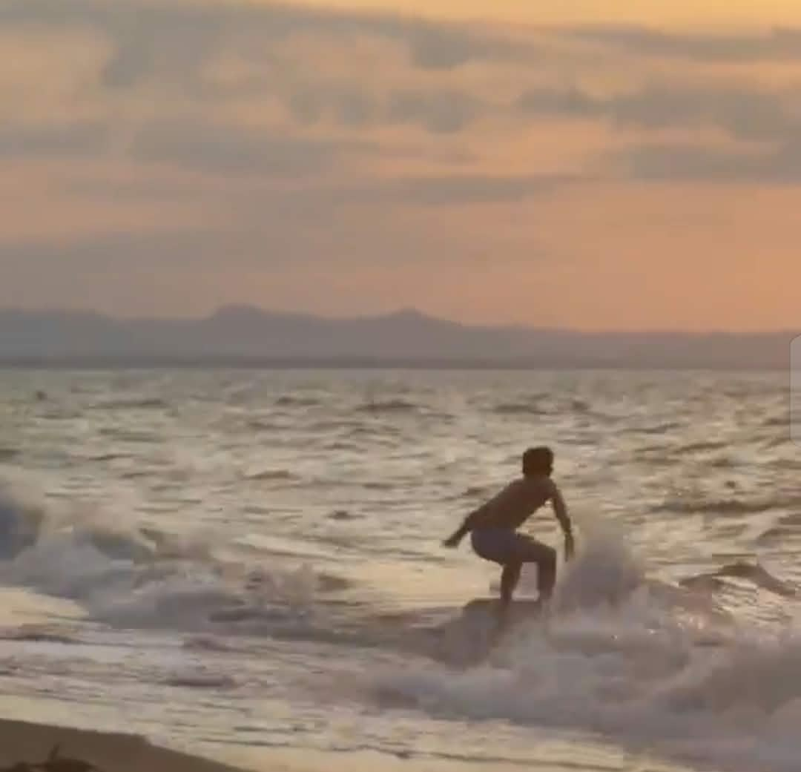
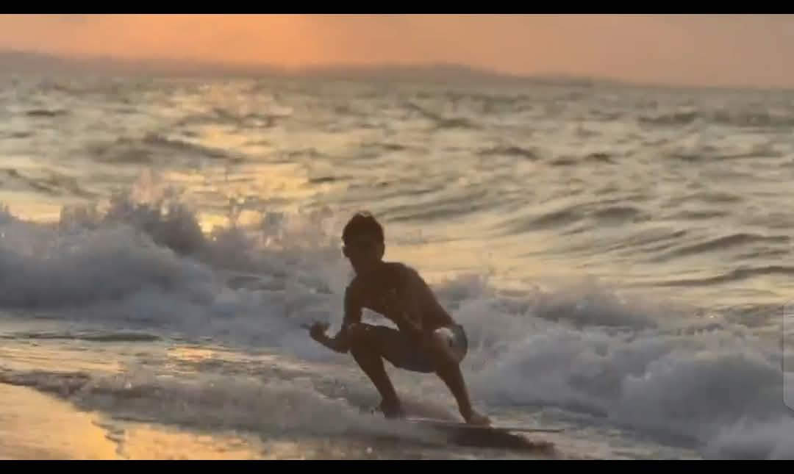
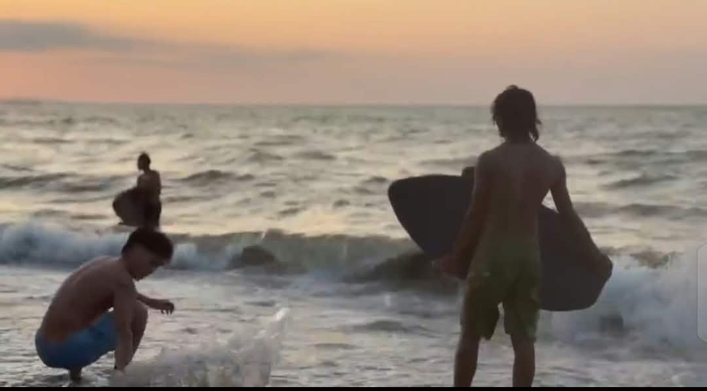

Introduction
Kita naba kag nag murag nag surf-surfing sa daplin dagat pero kaylangan pa mo dagan unya naay dala murag plywood? That's skimboarding! It is one of the activities I find interesting because it combines fun, balance, and skill. I like how it allows people to enjoy the beach while learning something challenging. In this blog, I'll share some basic steps for beginners who want to try skimboarding.
1. Choose the Right Skimboard
Before starting, you need a skimboard that is suitable for your experience and size. Beginners should choose a board that is comfortable to carry and easy to control.
2. Find a Suitable Beach
Choose a beach with a smooth, shallow shoreline and enough open space. Avoid areas with rocks, people, boats, or other obstacles. Always check the water conditions and follow local safety rules.

3. Learn How to Balance
Balance is important in skimboarding. Start by getting familiar with standing on the board while it is stationary on safe, flat ground. Practice maintaining a comfortable position before trying to glide.
4. Practice Basic Movements
Once you feel comfortable, practice basic movements in a safe, shallow area with supervision. Start slowly and focus on controlling your balance instead of trying difficult tricks immediately.

5. Be Patient and Enjoy the Experience
Learning skimboarding takes time and practice. You might not get everything right on your first try, but that's part of learning. Take breaks when needed, respect other beachgoers, and enjoy the experience.

Conclusion
Skimboarding is more than just a beach activity. It is a hobby that teaches patience, balance, and determination. For beginners, the most important thing is to start with the basics, practice safely, and enjoy every learning experience. You don't have to be an expert to have fun!